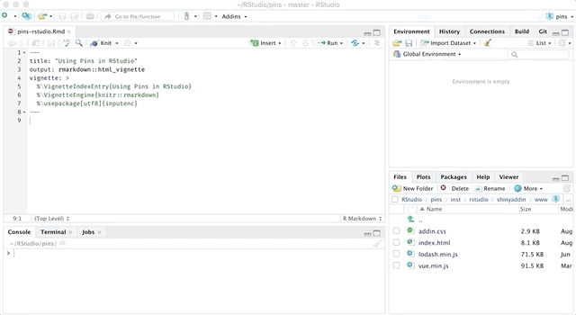

After installing the pins package, two features become availble in RStudio: the Find Pins Addin and a new Pins Connection type. The addin allows you do discover datasets, while the connection allows you to registere new boards and manage your existing pins.
Addin
You can use the Find Pins Addin to visually discover resources, this functionality is equivalent to using pin_find().

To launch this addin, use the Addins toolbar and then select Find Pins:

You can then use the search textbox to search across all registered boards, or select particular board from the dropdown to scope your search to particular ones. For instance, we can select the CRAN packages board and then search for ‘home prices’ which will update the results as you type. This example is equivalent to searching with pin_find("home pricees", board = "packages").

Please notice that search is implemented differently in eeach board. For the CRAN packages board, the entire search string is searched, case insensitive, in the name and description. Other boards might implement more advanced or simpled search algorithms.
Connection
You can connect to several different boards to discover, pin and share resources. This boards will be introduced in the GitHub, Kaggle, and [RStudio Connect](boards-rsconnect.html articles. However, you can also use this functionality to connect to the default local board, and explore the pins that you’ve created with pin().

First, open the RStudio’s Connecetions Pane, followed by selecting New Connection from the toolbar, this action will launch the connection wizard with a new Pins connection type. The connection provides support to connect to multiple boards, but for now, we will use a local connection which stores pins in a local folder.

Once connected to a board, you can browse pins available in that particular board using the connections pane. Each pin can the be expanded to show, when available, the columns each resource contains.

You can then preview eeaech resource by selecting the preview button which triggers code similar to pin_preview(pin_get("<name>", board = "<connection-board>")).

The next section, Understanding Boards, will properly present what exactly a board is and how to configure additional storage locations. However, it’s worth mentioning here that the board registration process to Github, Kaggle and RStudio Connecet boards can also be completed when creating a Pins Connection, just select the approriate board from the drop down to configure each board.